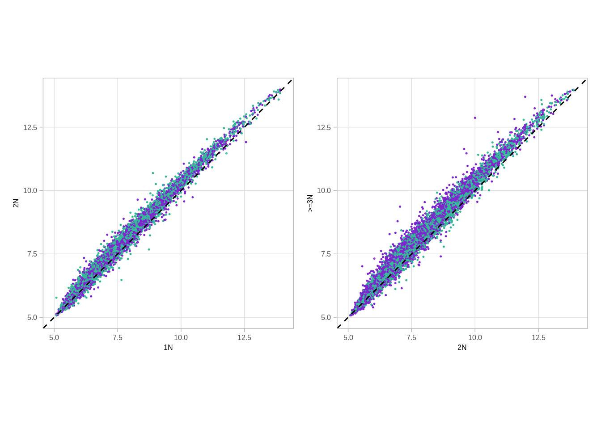

11 X dosage compensation
source(here::here("scripts/init.R"))We start by looking at the CNA data
options(repr.plot.width = 8, repr.plot.height = 4)
p1 <- cna %>% ggplot(aes(x=cna_val)) + geom_density() + xlim(0,5) + geom_vline(xintercept=c(0,0.5, 1.5, 2.5, 3.5, 4.5), color="red")
p2 <- cna %>% ggplot(aes(x=cna_val, color=factor(cna_round))) + geom_density() + xlim(0,5) + guides(color=FALSE)## Warning: `guides(<scale> = FALSE)` is deprecated. Please use `guides(<scale> =
## "none")` instead.p1 + p2## Warning: Removed 12192 rows containing non-finite values (stat_density).## Warning: Removed 12192 rows containing non-finite values (stat_density).11.1 X analysis
We then go to extract loci that are associated with xist expression
xist_loci <- get_xist_loci()
xist_loci_meth <- get_xist_loci_meth()## Joining, by = c("chrom", "start", "end")xist_meth <- xist_loci_meth %>%
group_by(samp) %>%
summarise(meth = mean(meth, na.rm = TRUE))
xist_expr <- get_gene_expression_mat() %>%
filter(name == "XIST") %>%
gather("samp", "expr", -(chrom:name3.chr))
xist_loci_expr <- get_xist_loci_expr()## Joining, by = c("chrom", "start", "end")df <- xist_meth %>%
left_join(xist_expr %>% select(samp, expr)) %>%
left_join(samp_data %>% select(samp, ER = ER1)) %>%
filter(!is.na(ER))## Joining, by = "samp"## Joining, by = "samp"head(xist_loci)## # A tibble: 6 x 3
## chrom start end
## 1 chrX 9983293 9983844
## 2 chrX 11776199 11776750
## 3 chrX 14891025 14891576
## 4 chrX 16964312 16964863
## 5 chrX 17393041 17393592
## 6 chrX 18443223 18443774count(xist_loci, chrom)## # A tibble: 1 x 2
## chrom n
## 1 chrX 615We show that Xist expression is correlated with XIST loci methylation
head(df)## # A tibble: 6 x 4
## samp meth expr ER
## 1 MB_0006 0.3131481 8.088802 ER+
## 2 MB_0028 0.1560928 6.482577 ER+
## 3 MB_0030 0.3030659 NA ER+
## 4 MB_0035 0.1877706 6.406843 ER-
## 5 MB_0040 0.2148237 NA ER+
## 6 MB_0046 0.1631259 6.652839 ER+11.1.0.1 Extended Data Figure 9B
options(repr.plot.width = 7, repr.plot.height = 7)
df %>% group_by(ER) %>% summarise(cor = cor(meth, expr, use="pairwise.complete.obs"))## # A tibble: 3 x 2
## ER cor
## 1 ER- 0.6021123
## 2 ER+ 0.5171663
## 3 normal 0.4914330p_xist_meth_cor <- df %>%
arrange(sample(samp)) %>%
ggplot(aes(x = meth, y = expr, color = ER)) +
geom_point(size=0.2) +
scale_color_manual(values = annot_colors$ER1, guide = FALSE) +
theme(aspect.ratio = 1) +
xlab("Methylation") +
ylab("Xist expression") +
annotate("text", x = 0.45, y = 6, label = sprintf("~ rho == %0.2f", cor(df$meth, df$expr, method = "spearman", use = "pairwise.complete.obs")), parse = TRUE, size = 2, family = "Arial")
p_xist_meth_cor## Warning: Removed 263 rows containing missing values (geom_point).## Warning: It is deprecated to specify `guide = FALSE` to remove a guide. Please
## use `guide = "none"` instead.Moving on to look at the methylation in different CNA regimes
get_xist_cna## function ()
## {
## xist_cna <- get_xist_loci() %>% gintervals.neighbors1(cna %>%
## mutate(end = ifelse(start == end, start + 1, end)) %>%
## filter(chrom == "chrX"), maxneighbors = nrow(samp_data)) %>%
## filter(dist == 0) %>% select(chrom, start, end, samp,
## cna = cna_round)
## xist_cna <- xist_cna %>% mutate(cna_grp = cut(cna, breaks = c(-1,
## 0, 1, 2, 10), labels = c("0N", "1N", "2N", ">=3N"))) %>%
## filter(cna_grp != "0N") %>% left_join(samp_data %>% select(samp,
## ER = ER1))
## return(xist_cna)
## }xist_cna <- get_xist_cna()## Joining, by = "samp"xist_cna %>% count(cna) %>% ggplot(aes(x=factor(cna), y=n)) + geom_col() + theme_bw()Plotting the distribution of loci
11.1.0.2 Extended Data Figure 9D
options(repr.plot.width = 8, repr.plot.height = 5)
df <- xist_cna %>%
left_join(get_xist_loci_meth()) %>%
group_by(cna_grp, ER, chrom, start, end) %>%
summarise(meth = mean(meth, na.rm = TRUE)) %>%
filter(!is.na(ER)) %>%
mutate(cna_grp = factor(cna_grp, levels = c("1N", "2N", ">=3N"))) %>%
mutate(ER = factor(ER, levels = c("ER+", "ER-")))## Joining, by = c("chrom", "start", "end")## Joining, by = c("chrom", "start", "end", "samp")p_boxp_meth_cna <- df %>%
ggplot(aes(x = cna_grp, y = meth, fill = ER, group = cna_grp)) +
# ggrastr::geom_boxplot_jitter(outlier.size = 0.1, outlier.jitter.width = 0.01, raster=TRUE) +
geom_boxplot(linewidth=0.1, fatten=0.5, outlier.size=0.1) +
scale_fill_manual(values = annot_colors$ER1, guide = FALSE) +
xlab("") +
ylab("Methylation in Xist\nassociated promoters") +
facet_grid(. ~ ER) +
ylim(0, 1.1) +
theme(
panel.grid.major.x = element_blank(),
panel.grid.minor.x = element_blank()
)## Warning: Ignoring unknown parameters: linewidthp_boxp_meth_cna + ggpubr::stat_compare_means(label = "p.signif", comparisons = list(c("1N", "2N"), c("2N", ">=3N")))+ theme_bw()## Warning: Removed 2016 rows containing non-finite values (stat_boxplot).## Warning: Removed 2016 rows containing non-finite values (stat_signif).## Warning: It is deprecated to specify `guide = FALSE` to remove a guide. Please
## use `guide = "none"` instead.p_boxp_meth_cna + ggpubr::stat_compare_means(comparisons = list(c("1N", "2N"), c("2N", ">=3N")))+ theme_bw()## Warning: Removed 2016 rows containing non-finite values (stat_boxplot).## Warning: Removed 2016 rows containing non-finite values (stat_signif).## Warning: It is deprecated to specify `guide = FALSE` to remove a guide. Please
## use `guide = "none"` instead.
df %>% ungroup() %>% distinct(chrom, start, end, ER, cna_grp) %>% count(ER, cna_grp)## # A tibble: 6 x 3
## ER cna_grp n
## 1 ER+ 1N 615
## 2 ER+ 2N 615
## 3 ER+ >=3N 615
## 4 ER- 1N 615
## 5 ER- 2N 615
## 6 ER- >=3N 615xist_cna %>% distinct(cna_grp, samp, ER) %>% count(cna_grp, ER) ## # A tibble: 6 x 3
## cna_grp ER n
## 1 1N ER- 181
## 2 1N ER+ 444
## 3 2N ER- 269
## 4 2N ER+ 988
## 5 >=3N ER- 135
## 6 >=3N ER+ 413We now move to show scatters of loci in different CNA regimes
get_xist_meth_cna## function ()
## {
## get_xist_cna() %>% inner_join(get_xist_loci_meth()) %>% group_by(chrom,
## start, end, ER, cna_grp) %>% summarise(meth = mean(meth,
## na.rm = TRUE)) %>% ungroup() %>% spread(cna_grp, meth)
## }xist_meth_cna <- get_xist_meth_cna()## Joining, by = "samp"## Joining, by = c("chrom", "start", "end")## Joining, by = c("chrom", "start", "end", "samp")head(xist_meth_cna)## # A tibble: 6 x 7
## chrom start end ER 1N 2N >=3N
## 1 chrX 9983293 9983844 ER- 0.2078918 0.3067645 0.3205268
## 2 chrX 9983293 9983844 ER+ 0.1944013 0.3302692 0.3235067
## 3 chrX 11683770 11684321 ER- 0.2001634 0.2802105 0.2939960
## 4 chrX 11683770 11684321 ER+ 0.2885676 0.3238455 0.3123392
## 5 chrX 11776199 11776750 ER- 0.3316496 0.4977368 0.5313945
## 6 chrX 11776199 11776750 ER+ 0.3403706 0.5048260 0.502340511.1.0.3 Extended Data Figure 9E
p_scatter_meth_cna_2_3 <- xist_meth_cna %>%
ggplot(aes(x = `2N`, y = `>=3N`, color = ER)) +
# ggrastr::geom_point_rast(size = 0.2, raster.width = 1, raster.height = 1) +
geom_point(size=0.2) +
geom_abline(color = "black", linetype = "dashed") +
scale_color_manual(values = annot_colors$ER1, guide = FALSE) +
theme(aspect.ratio = 1) +
xlim(0, 0.65) +
ylim(0, 0.65) #+
# annotate("text", x = 0.5, y = 0.1, label = paste("rho = ", round(cor(xist_meth_cna$`2N`, xist_meth_cna$`>=3N`, use = "pairwise.complete.obs"), digits = 3)), size = 2, family = "Arial")
p_scatter_meth_cna_1_2 <- xist_meth_cna %>%
ggplot(aes(x = `1N`, y = `2N`, color = ER)) +
# ggrastr::geom_point_rast(size = 0.2, raster.width = 1, raster.height = 1) +
geom_point(size=0.2) +
geom_abline(color = "black", linetype = "dashed") +
scale_color_manual(values = annot_colors$ER1, guide = FALSE) +
theme(aspect.ratio = 1) +
xlim(0, 0.65) +
ylim(0, 0.65) #+
# annotate("text", x = 0.5, y = 0.1, label = paste("rho = ", round(cor(xist_meth_cna$`1N`, xist_meth_cna$`2N`, use = "pairwise.complete.obs"), digits = 3)), size = 2, family = "Arial")
(p_scatter_meth_cna_1_2 + theme_bw() + theme(aspect.ratio = 1)) + (p_scatter_meth_cna_2_3 + theme_bw() + theme(aspect.ratio = 1))## Warning: It is deprecated to specify `guide = FALSE` to remove a guide. Please
## use `guide = "none"` instead.
## Warning: It is deprecated to specify `guide = FALSE` to remove a guide. Please
## use `guide = "none"` instead.
p_scatter_meth_cna_2_3 + facet_wrap(~ER) + theme_bw() + theme(aspect.ratio = 1) ## Warning: It is deprecated to specify `guide = FALSE` to remove a guide. Please
## use `guide = "none"` instead.
Same with expression:
get_xist_expr_cna## function ()
## {
## get_xist_cna() %>% inner_join(get_xist_loci_expr()) %>% group_by(chrom,
## start, end, ER, cna_grp) %>% summarise(expr = mean(expr,
## na.rm = TRUE)) %>% ungroup() %>% spread(cna_grp, expr)
## }xist_expr_cna <- get_xist_expr_cna()## Joining, by = "samp"## Joining, by = c("chrom", "start", "end")## Joining, by = c("chrom", "start", "end", "samp")head(xist_expr_cna)## # A tibble: 6 x 7
## chrom start end ER 1N 2N >=3N
## 1 chrX 9983293 9983844 ER- 7.880753 7.976930 8.193818
## 2 chrX 9983293 9983844 ER+ 7.770670 7.811101 8.114064
## 3 chrX 14891025 14891576 ER- 7.175153 7.258638 7.427273
## 4 chrX 14891025 14891576 ER+ 7.268545 7.233742 7.451081
## 5 chrX 14891133 14891684 ER- 6.111207 6.018312 6.172959
## 6 chrX 14891133 14891684 ER+ 5.900340 5.859142 5.91292311.1.0.4 Extended Data Figure 9F
p_scatter_expr_cna_2_3 <- xist_expr_cna %>%
ggplot(aes(x = `2N`, y = `>=3N`, color = ER)) +
geom_point(size=0.2) +
geom_abline(color = "black", linetype = "dashed") +
scale_color_manual(values = annot_colors$ER1, guide = FALSE) +
theme(aspect.ratio = 1) +
xlim(5, 14) +
ylim(5, 14)
p_scatter_expr_cna_1_2 <- xist_expr_cna %>% ggplot(aes(x = `1N`, y = `2N`, color = ER)) +
geom_point(size=0.2) +
geom_abline(color = "black", linetype = "dashed") +
scale_color_manual(values = annot_colors$ER1, guide = FALSE) +
theme(aspect.ratio = 1) +
xlim(5, 14) +
ylim(5, 14)
p_scatter_expr_cna_1_2 + p_scatter_expr_cna_2_3## Warning: Removed 60 rows containing missing values (geom_point).## Warning: It is deprecated to specify `guide = FALSE` to remove a guide. Please
## use `guide = "none"` instead.## Warning: Removed 60 rows containing missing values (geom_point).## Warning: It is deprecated to specify `guide = FALSE` to remove a guide. Please
## use `guide = "none"` instead.
11.2 autosome analysis
get_autosome_loci## function ()
## {
## get_promoter_avg_meth() %>% select(chrom, start, end) %>%
## filter(chrom != "chrX", chrom != "chrY") %>% anti_join(get_xist_loci(),
## by = c("chrom", "start", "end"))
## }autosome_loci <- get_autosome_loci()get_autosome_cna## function ()
## {
## {
## autosome_cna <- get_autosome_loci() %>% gintervals.neighbors1(cna %>%
## mutate(end = ifelse(start == end, start + 1, end)) %>%
## filter(chrom != "chrX"), maxneighbors = nrow(samp_data)) %>%
## filter(dist == 0) %>% select(chrom, start, end, samp,
## cna = cna_round)
## autosome_cna <- autosome_cna %>% mutate(cna_grp = cut(cna,
## breaks = c(-1, 0, 1, 2, 10), labels = c("0N", "1N",
## "2N", ">=3N"))) %>% filter(cna_grp != "0N") %>%
## left_join(samp_data %>% select(samp, ER = ER1))
## autosome_cna
## } %cache_df% here("data/autosome_cna.tsv") %>% as_tibble()
## }autosome_cna <- get_autosome_cna()
head(autosome_cna)## # A tibble: 6 x 7
## chrom start end samp cna cna_grp ER
## 1 chr1 762469 763020 MB_0006 2 2N ER+
## 2 chr1 762469 763020 MB_0028 1 1N ER+
## 3 chr1 762469 763020 MB_0035 2 2N ER-
## 4 chr1 762469 763020 MB_0046 2 2N ER+
## 5 chr1 762469 763020 MB_0050 2 2N ER+
## 6 chr1 762469 763020 MB_0053 1 1N ER+get_autosome_loci_meth## function ()
## {
## get_autosome_loci() %>% inner_join(get_promoter_avg_meth()) %>%
## gather("samp", "meth", -(chrom:end))
## }autosome_loci_meth <- get_autosome_loci_meth()## Joining, by = c("chrom", "start", "end")head(autosome_loci_meth)## chrom start end samp meth
## 1 chr1 762469 763020 MB_0006 0.000000000
## 2 chr1 762676 763227 MB_0006 0.021929825
## 3 chr1 860619 861170 MB_0006 0.001870324
## 4 chr1 895465 896016 MB_0006 0.014367816
## 5 chr1 901375 901926 MB_0006 0.024253731
## 6 chr1 948345 948896 MB_0006 0.000000000Plotting the distribution of loci
11.2.0.1 Extended Data Figure 9G
options(repr.plot.width = 8, repr.plot.height = 5)
df <- autosome_cna %>%
left_join(autosome_loci_meth) %>%
group_by(cna_grp, ER, chrom, start, end) %>%
summarise(meth = mean(meth, na.rm = TRUE)) %>%
filter(!is.na(ER)) %>%
mutate(cna_grp = factor(cna_grp, levels = c("1N", "2N", ">=3N"))) %>%
mutate(ER = factor(ER, levels = c("ER+", "ER-")))## Joining, by = c("chrom", "start", "end", "samp")p_boxp_meth_cna_autosome <- df %>%
ggplot(aes(x = cna_grp, y = meth, fill = ER, group = cna_grp)) +
# ggrastr::geom_boxplot_jitter(outlier.size = 0.1, outlier.jitter.width = 0.01, raster=TRUE) +
geom_boxplot(linewidth=0.1, fatten=0.5, outlier.size = 0.1) +
scale_fill_manual(values = annot_colors$ER1, guide = FALSE) +
xlab("") +
ylab("Methylation in autosomes") +
facet_grid(. ~ ER) +
ylim(0, 1.1) +
theme(
panel.grid.major.x = element_blank(),
panel.grid.minor.x = element_blank()
)## Warning: Ignoring unknown parameters: linewidthp_boxp_meth_cna_autosome + ggpubr::stat_compare_means(comparisons = list(c("1N", "2N"), c("2N", ">=3N")))## Warning: Removed 6 rows containing missing values (geom_signif).## Warning: It is deprecated to specify `guide = FALSE` to remove a guide. Please
## use `guide = "none"` instead.p_boxp_meth_cna_autosome +
ggpubr::stat_compare_means(label = "p.signif", comparisons = list(c("1N", "2N"), c("2N", ">=3N"))) ## Warning: Removed 6 rows containing missing values (geom_signif).
## Warning: It is deprecated to specify `guide = FALSE` to remove a guide. Please
## use `guide = "none"` instead.p_boxp_meth_cna_autosome## Warning: It is deprecated to specify `guide = FALSE` to remove a guide. Please
## use `guide = "none"` instead.df %>% ungroup() %>% distinct(chrom, start, end, ER) %>% count(ER)## # A tibble: 2 x 2
## ER n
## 1 ER+ 15207
## 2 ER- 15207autosome_cna %>% distinct(cna_grp, samp, ER) %>% count(ER, cna_grp)## # A tibble: 6 x 3
## ER cna_grp n
## 1 ER- >=3N 296
## 2 ER- 1N 278
## 3 ER- 2N 293
## 4 ER+ >=3N 1077
## 5 ER+ 1N 1060
## 6 ER+ 2N 1085We now move to show scatters of loci in different CNA regimes
get_autosome_meth_cna## function ()
## {
## {
## auto_df <- get_autosome_cna() %>% inner_join(get_autosome_loci_meth()) %>%
## group_by(chrom, start, end, ER, cna_grp) %>% summarise(meth = mean(meth,
## na.rm = TRUE)) %>% ungroup() %>% spread(cna_grp,
## meth)
## auto_df
## } %cache_df% here("data/autosome_meth_cna.tsv") %>% as_tibble()
## }autosome_meth_cna <- get_autosome_meth_cna()
head(autosome_meth_cna)## # A tibble: 6 x 7
## chrom start end ER >=3N 1N 2N
## 1 chr1 762469 763020 ER- 0.007852706 0.008341878 0.007857689
## 2 chr1 762469 763020 ER+ 0.006506879 0.008089050 0.008125402
## 3 chr1 762676 763227 ER- 0.028412915 0.021358769 0.026941446
## 4 chr1 762676 763227 ER+ 0.028590166 0.070967669 0.042346185
## 5 chr1 762851 763402 ER- 0.029766663 0.022340914 0.029069381
## 6 chr1 762851 763402 ER+ 0.032413643 0.078736553 0.04712829511.2.0.2 Extended Data Figure 9H
options(repr.plot.width = 5, repr.plot.height = 3)
p_scatter_meth_cna_2_3_autosome <- autosome_meth_cna %>%
ggplot(aes(x = `2N`, y = `>=3N`, color = ER)) +
geom_point(size=0.2) +
geom_abline(color = "black", linetype = "dashed") +
scale_color_manual(values = annot_colors$ER1, guide = FALSE) +
geom_abline(color = "red", linetype = "dashed", intercept = 0.1) +
geom_abline(color = "red", linetype = "dashed", intercept = -0.1) +
theme(aspect.ratio = 1)
p_scatter_meth_cna_1_2_autosome <- autosome_meth_cna %>%
ggplot(aes(x = `1N`, y = `2N`, color = ER)) +
geom_point(size=0.2) +
geom_abline(color = "black", linetype = "dashed") +
scale_color_manual(values = annot_colors$ER1, guide = FALSE) +
geom_abline(color = "red", linetype = "dashed", intercept = 0.1) +
geom_abline(color = "red", linetype = "dashed", intercept = -0.1) +
theme(aspect.ratio = 1)
p_scatter_meth_cna_1_2_autosome + p_scatter_meth_cna_2_3_autosome## Warning: Removed 5 rows containing missing values (geom_point).## Warning: It is deprecated to specify `guide = FALSE` to remove a guide. Please
## use `guide = "none"` instead.
## Warning: It is deprecated to specify `guide = FALSE` to remove a guide. Please
## use `guide = "none"` instead.
Same with expression:
get_autosome_expr_cna## function ()
## {
## {
## auto_df <- get_autosome_cna() %>% inner_join(get_autosome_loci_expr()) %>%
## group_by(chrom, start, end, ER, cna_grp) %>% summarise(expr = mean(expr,
## na.rm = TRUE)) %>% ungroup() %>% spread(cna_grp,
## expr)
## auto_df
## } %cache_df% here("data/autosome_expr_cna.tsv") %>% as_tibble()
## }autosome_expr_cna <- get_autosome_expr_cna()
head(autosome_expr_cna)## # A tibble: 6 x 7
## chrom start end ER >=3N 1N 2N
## 1 chr1 762469 763020 ER- NA NA NA
## 2 chr1 762469 763020 ER+ NA NA NA
## 3 chr1 762851 763402 ER- NA NA NA
## 4 chr1 762851 763402 ER+ NA NA NA
## 5 chr1 860619 861170 ER- 5.598424 5.685151 5.844717
## 6 chr1 860619 861170 ER+ 5.816428 5.804565 5.811422p_scatter_expr_cna_2_3 <- autosome_expr_cna %>%
ggplot(aes(x = `2N`, y = `>=3N`, color = ER)) +
geom_point(size=0.2) +
geom_abline(color = "black", linetype = "dashed") +
scale_color_manual(values = annot_colors$ER1, guide = FALSE) +
theme(aspect.ratio = 1) +
xlim(5, 14) +
ylim(5, 14)
p_scatter_expr_cna_1_2 <- autosome_expr_cna %>% ggplot(aes(x = `1N`, y = `2N`, color = ER)) +
geom_point(size=0.2) +
geom_abline(color = "black", linetype = "dashed") +
scale_color_manual(values = annot_colors$ER1, guide = FALSE) +
theme(aspect.ratio = 1) +
xlim(5, 14) +
ylim(5, 14)
p_scatter_expr_cna_1_2 + p_scatter_expr_cna_2_3## Warning: Removed 5366 rows containing missing values (geom_point).## Warning: It is deprecated to specify `guide = FALSE` to remove a guide. Please
## use `guide = "none"` instead.## Warning: Removed 5369 rows containing missing values (geom_point).## Warning: It is deprecated to specify `guide = FALSE` to remove a guide. Please
## use `guide = "none"` instead.
Looking at the distribution of loci in 2N / >=3N (averaging the samples expression per ER and CNA)
get_xist_expr_cna## function ()
## {
## get_xist_cna() %>% inner_join(get_xist_loci_expr()) %>% group_by(chrom,
## start, end, ER, cna_grp) %>% summarise(expr = mean(expr,
## na.rm = TRUE)) %>% ungroup() %>% spread(cna_grp, expr)
## }get_autosome_expr_cna## function ()
## {
## {
## auto_df <- get_autosome_cna() %>% inner_join(get_autosome_loci_expr()) %>%
## group_by(chrom, start, end, ER, cna_grp) %>% summarise(expr = mean(expr,
## na.rm = TRUE)) %>% ungroup() %>% spread(cna_grp,
## expr)
## auto_df
## } %cache_df% here("data/autosome_expr_cna.tsv") %>% as_tibble()
## }df_fc <- get_xist_expr_cna() %>%
mutate(type = "X") %>%
bind_rows(get_autosome_expr_cna() %>% mutate(type = "auto")) %>%
mutate(diff = `>=3N` - `2N`, diff1 = `2N` - `1N`) %>%
# filter(ER == "ER+")
filter(ER == "ER-")## Joining, by = "samp"## Joining, by = c("chrom", "start", "end")## Joining, by = c("chrom", "start", "end", "samp")head(df_fc)## # A tibble: 6 x 10
## chrom start end ER 1N 2N >=3N type diff
## 1 chrX 9983293 9983844 ER- 7.880753 7.976930 8.193818 X 0.216887405
## 2 chrX 14891025 14891576 ER- 7.175153 7.258638 7.427273 X 0.168634811
## 3 chrX 14891133 14891684 ER- 6.111207 6.018312 6.172959 X 0.154646592
## 4 chrX 15353625 15354176 ER- 7.884146 7.926416 8.264637 X 0.338220886
## 5 chrX 16964312 16964863 ER- 6.916974 7.004652 7.381009 X 0.376356425
## 6 chrX 17393041 17393592 ER- 6.256066 6.338770 6.347885 X 0.009114449
## diff1
## 1 0.09617691
## 2 0.08348508
## 3 -0.09289491
## 4 0.04227070
## 5 0.08767872
## 6 0.0827041111.2.0.3 Extended Data Figure 9I
pval <- ks.test(df_fc$diff[df_fc$type == "X"], df_fc$diff[df_fc$type == "auto"])$p.value
message(pval)## 2.47357689886485e-12fc_p <- df_fc %>%
ggplot(aes(color = type, x = diff)) +
geom_density(size = 1) +
theme(aspect.ratio = 1) +
xlab("log expression fold change (>=3N/2N)") +
ylab("") +
scale_color_manual(values = c("X" = "darkblue", "auto" = "red")) +
coord_cartesian(xlim = c(-0.5, 1)) +
theme(aspect.ratio = 1)
# annotate("text", x = 0.5, y = 4, label = "p<<0.001 (KS)", size = 2, family = "Arial")
fc_p## Warning: Removed 2710 rows containing non-finite values (stat_density).pval <- ks.test(df_fc$diff1[df_fc$type == "X"], df_fc$diff1[df_fc$type == "auto"])$p.value
message(pval)## 0fc_p <- df_fc %>%
ggplot(aes(color = type, x = -diff1)) +
geom_density(size = 1) +
theme(aspect.ratio = 1) +
xlab("log expression fold change (1N/2N)") +
ylab("") +
scale_color_manual(values = c("X" = "darkblue", "auto" = "red")) +
coord_cartesian(xlim = c(-0.5, 1)) +
theme(aspect.ratio = 1)
# annotate("text", x = 0.5, y = 4, label = "p<<0.001 (KS)", size = 2, family = "Arial")
fc_p## Warning: Removed 2710 rows containing non-finite values (stat_density).
head(df_fc)## # A tibble: 6 x 10
## chrom start end ER 1N 2N >=3N type diff
## 1 chrX 9983293 9983844 ER- 7.880753 7.976930 8.193818 X 0.216887405
## 2 chrX 14891025 14891576 ER- 7.175153 7.258638 7.427273 X 0.168634811
## 3 chrX 14891133 14891684 ER- 6.111207 6.018312 6.172959 X 0.154646592
## 4 chrX 15353625 15354176 ER- 7.884146 7.926416 8.264637 X 0.338220886
## 5 chrX 16964312 16964863 ER- 6.916974 7.004652 7.381009 X 0.376356425
## 6 chrX 17393041 17393592 ER- 6.256066 6.338770 6.347885 X 0.009114449
## diff1
## 1 0.09617691
## 2 0.08348508
## 3 -0.09289491
## 4 0.04227070
## 5 0.08767872
## 6 0.08270411thresh <- 0.1
autosome_cna_meth_expr <- get_autosome_cna_meth_expr()
dosage_cands <- autosome_cna_meth_expr %>%
filter(`>=3N` >= (`2N` + thresh) ) %>%
filter(`n_>=3N` >= 5, `n_2N` >= 5)
dosage_cands_1N <- autosome_cna_meth_expr %>%
filter(`1N` <= (`2N` - thresh) ) %>%
filter(`n_1N` >= 5, `n_2N` >= 5)
dosage_cands_expr <- dosage_cands %>% select(chrom, start, end, ER, `1N` = `expr_1N`, `2N` = `expr_2N`, `>=3N` = `expr_>=3N`)
dosage_cands_expr_1N <- dosage_cands_1N %>% select(chrom, start, end, ER, `1N` = `expr_1N`, `2N` = `expr_2N`)
df_fc <- get_xist_expr_cna() %>%
mutate(type = "X") %>%
bind_rows(autosome_expr_cna %>% anti_join(dosage_cands_expr) %>% mutate(type = "auto")) %>%
bind_rows(dosage_cands_expr %>% mutate(type = "auto-dosage")) %>%
mutate(ER = factor(ER, levels=c("ER+", "ER-"))) %>%
filter(!is.na(ER)) %>%
mutate(type = factor(type, levels=c("X", "auto", "auto-dosage"))) %>%
arrange(type) %>%
mutate(diff = `>=3N` - `2N`) ## Joining, by = "samp"## Joining, by = c("chrom", "start", "end")## Joining, by = c("chrom", "start", "end", "samp")## Joining, by = c("chrom", "start", "end", "ER", ">=3N", "1N", "2N") fc_p <- df_fc %>%
ggplot(aes(color = type, x = diff)) +
geom_density(size = 0.5) +
theme(aspect.ratio = 1) +
xlab("log expression fold change (>=3N/2N)") +
ylab("") +
scale_color_manual(values = c("auto" = "red", "auto-dosage" = "blue", "X" = "gray")) +
# ggsci::scale_color_npg() +
coord_cartesian(xlim = c(-0.6, 1)) +
theme(aspect.ratio = 1) +
facet_wrap(~ER, scale="free_y", nrow=1) +
guides(color = FALSE)## Warning: `guides(<scale> = FALSE)` is deprecated. Please use `guides(<scale> =
## "none")` instead. df_fc %>% group_by(ER) %>% summarise(p_x_auto = ks.test(diff[type == "X"], diff[type == "auto"])$p.value, p_auto_dosage = ks.test(diff[type == "auto-dosage"], diff[type == "auto"])$p.value) %>% print()## # A tibble: 2 x 3
## ER p_x_auto p_auto_dosage
## 1 ER+ 5.535245e-03 0
## 2 ER- 1.049272e-12 0 df_fc_1N <- get_xist_expr_cna() %>%
mutate(type = "X") %>%
bind_rows(autosome_expr_cna %>% anti_join(dosage_cands_expr_1N) %>% mutate(type = "auto")) %>%
bind_rows(dosage_cands_expr_1N %>% mutate(type = "auto-dosage")) %>%
mutate(ER = factor(ER, levels=c("ER+", "ER-"))) %>%
filter(!is.na(ER)) %>%
mutate(type = factor(type, levels=c("X", "auto", "auto-dosage"))) %>%
arrange(type) %>%
mutate(diff = `1N` - `2N`) ## Joining, by = "samp"## Joining, by = c("chrom", "start", "end")## Joining, by = c("chrom", "start", "end", "samp")## Joining, by = c("chrom", "start", "end", "ER", "1N", "2N") fc_p_1N <- df_fc_1N %>%
ggplot(aes(color = type, x = diff)) +
geom_density(size = 0.5) +
theme(aspect.ratio = 1) +
xlab("log expression fold change (1N/2N)") +
ylab("") +
scale_color_manual(values = c("auto" = "red", "auto-dosage" = "blue", "X" = "gray")) +
coord_cartesian(xlim = c(-0.6, 1)) +
theme(aspect.ratio = 1) +
facet_wrap(~ER, scale="free_y", nrow=1) +
guides(color = FALSE)## Warning: `guides(<scale> = FALSE)` is deprecated. Please use `guides(<scale> =
## "none")` instead. df_fc_1N %>% group_by(ER) %>% summarise(p_x_auto = ks.test(diff[type == "X"], diff[type == "auto"])$p.value, p_auto_dosage = ks.test(diff[type == "auto-dosage"], diff[type == "auto"])$p.value) %>% print() ## # A tibble: 2 x 3
## ER p_x_auto p_auto_dosage
## 1 ER+ 0 0.025082963
## 2 ER- 0 0.006876647fc_p## Warning: Removed 5500 rows containing non-finite values (stat_density).fc_p_1N## Warning: Removed 5431 rows containing non-finite values (stat_density).
11.3 Checking dosage compensation on all X loci
get_xist_loci## function ()
## {
## {
## xist_expr <- get_gene_expression_mat() %>% filter(name ==
## "XIST") %>% gather("samp", "expr", -(chrom:name3.chr)) %>%
## as_tibble()
## all_norm_meth <- fread(here("data/all_norm_meth.tsv")) %>%
## filter(chrom == "chrX") %>% as_tibble()
## ER_positive_mat <- all_norm_meth %>% select(chrom:end,
## any_of(ER_positive_samples)) %>% intervs_to_mat()
## ER_negative_mat <- all_norm_meth %>% select(chrom:end,
## any_of(ER_negative_samples)) %>% intervs_to_mat()
## xist_expr_vec <- xist_expr %>% select(samp, expr) %>%
## deframe()
## samples <- intersect(names(xist_expr_vec), colnames(ER_positive_mat))
## ER_pos_cors <- tgs_cor(t(ER_positive_mat[, samples]),
## as.matrix(xist_expr_vec[samples]), pairwise.complete.obs = TRUE)
## samples <- intersect(names(xist_expr_vec), colnames(ER_negative_mat))
## ER_neg_cors <- tgs_cor(t(ER_negative_mat[, samples]),
## as.matrix(xist_expr_vec[samples]), pairwise.complete.obs = TRUE)
## xist_loci <- cbind(ER_pos_cors, ER_neg_cors) %>% mat_to_intervs() %>%
## filter(V1 >= 0.2 | V2 >= 0.2) %>% distinct(chrom,
## start, end)
## } %cache_df% here("data/xist_loci.tsv") %>% as_tibble()
## }
## <bytecode: 0xfcb8860>all_norm_meth_x <- fread(here("data/all_norm_meth.tsv")) %>%
filter(chrom == "chrX") %>% as_tibble()
X_loci <- all_norm_meth_x %>% distinct(chrom, start, end)get_xist_cna## function ()
## {
## xist_cna <- get_xist_loci() %>% gintervals.neighbors1(cna %>%
## mutate(end = ifelse(start == end, start + 1, end)) %>%
## filter(chrom == "chrX"), maxneighbors = nrow(samp_data)) %>%
## filter(dist == 0) %>% select(chrom, start, end, samp,
## cna = cna_round)
## xist_cna <- xist_cna %>% mutate(cna_grp = cut(cna, breaks = c(-1,
## 0, 1, 2, 10), labels = c("0N", "1N", "2N", ">=3N"))) %>%
## filter(cna_grp != "0N") %>% left_join(samp_data %>% select(samp,
## ER = ER1))
## return(xist_cna)
## }
## <bytecode: 0x1612c170>X_cna <- X_loci %>% gintervals.neighbors1(cna %>%
mutate(end = ifelse(start == end, start + 1, end)) %>%
filter(chrom == "chrX"), maxneighbors = nrow(samp_data)) %>%
filter(dist == 0) %>% select(chrom, start, end, samp,
cna = cna_round)
X_cna <- X_cna %>% mutate(cna_grp = cut(cna, breaks = c(-1,
0, 1, 2, 10), labels = c("0N", "1N", "2N", ">=3N"))) %>%
filter(cna_grp != "0N") %>% left_join(samp_data %>% select(samp,
ER = ER1)) %cache_df% here("data/X_cna.tsv") %>% as_tibble()
head(X_cna)## # A tibble: 6 x 7
## chrom start end samp cna cna_grp ER
## 1 chrX 192489 193040 MB_0006 2 2N ER+
## 2 chrX 192489 193040 MB_0028 1 1N ER+
## 3 chrX 192489 193040 MB_0046 1 1N ER+
## 4 chrX 192489 193040 MB_0050 1 1N ER+
## 5 chrX 192489 193040 MB_0053 1 1N ER+
## 6 chrX 192489 193040 MB_0054 2 2N ER+get_xist_loci_meth## function ()
## {
## get_xist_loci() %>% inner_join(get_promoter_avg_meth()) %>%
## gather("samp", "meth", -(chrom:end))
## }
## <bytecode: 0x498253b0>X_loci_meth <- X_loci %>% inner_join(get_promoter_avg_meth()) %>%
gather("samp", "meth", -(chrom:end))## Joining, by = c("chrom", "start", "end")options(repr.plot.width = 5, repr.plot.height = 3)
p_boxp_meth_cna_all <- X_cna %>%
left_join(X_loci_meth) %>%
group_by(cna_grp, ER, chrom, start, end) %>%
summarise(meth = mean(meth, na.rm = TRUE)) %>%
filter(!is.na(ER)) %>%
mutate(cna_grp = factor(cna_grp, levels = c("1N", "2N", ">=3N"))) %>%
mutate(ER = factor(ER, levels = c("ER+", "ER-"))) %>%
ggplot(aes(x = cna_grp, y = meth, fill = ER, group = cna_grp)) +
geom_boxplot(linewidth=0.1, fatten=0.5, outlier.size = 0.1) +
scale_fill_manual(values = annot_colors$ER1, guide = FALSE) +
xlab("") +
ylab("Methylation in X promoters") +
facet_grid(. ~ ER) +
ylim(0, 1.1) +
ggpubr::stat_compare_means(label = "p.signif", comparisons = list(c("1N", "2N"), c("2N", ">=3N"))) +
theme(
panel.grid.major.x = element_blank(),
panel.grid.minor.x = element_blank()
)## Joining, by = c("chrom", "start", "end", "samp")## Warning: Ignoring unknown parameters: linewidthp_boxp_meth_cna_all## Warning: Removed 41928 rows containing non-finite values (stat_boxplot).## Warning: Removed 41928 rows containing non-finite values (stat_signif).## Warning: Removed 6 rows containing missing values (geom_signif).## Warning: It is deprecated to specify `guide = FALSE` to remove a guide. Please
## use `guide = "none"` instead.Looks very similar to the XIST associated version
11.4 % of X lost
11.4.0.1 Extended Data Figure 9C
chr_x_len <- gintervals.all() %>% filter(chrom == "chrX") %>% pull(end)
p_x_perc <- cna %>%
filter(chrom == "chrX") %>% mutate(l = end - start) %>%
mutate(cna = cut(cna_round, breaks = c(0, 1, 2, 20), include.lowest=TRUE, labels=c("Loss", "normal", "Gain"))) %>%
group_by(samp, cna) %>%
summarise(p = sum(l) / chr_x_len) %>%
filter(cna != "normal") %>%
ungroup() %>%
add_ER() %>%
filter(!is.na(ER)) %>%
ggplot(aes(x=p, color=ER, y=1-..y..)) +
stat_ecdf() +
facet_wrap(~cna) +
scale_color_manual(values=annot_colors$ER1) +
theme(aspect.ratio=1) +
xlab("% of X") +
ylab("% of samples") +
scale_x_continuous(labels=scales::percent) +
scale_y_continuous(labels=scales::percent)
p_x_perc
11.5 Plot Expression-Methylation correlation for X
meth_mat <- all_norm_meth_x %>% select(chrom:end, any_of(ER_positive_samples)) %>% intervs_to_mat()expr_m <- get_gene_expression_mat() %>% select(-any_of(c("chrom", "start", "end", "name3.chr")))
expr_mat <- expr_m %>%
as.data.frame() %>%
column_to_rownames("name")
f <- rowSums(!is.na(expr_mat)) > 0
expr_mat <- expr_mat[f, ]
dim(expr_mat)## [1] 17691 2124em_cross <- em_cross_cor(meth_mat, expr_mat, meth_cor_thresh = 0.25, expr_cor_thresh = 0.25) %cache_rds% here("data/X_er_positive_em_cross_cor.rds")em_cross_clust <- cluster_em_cross_cor(em_cross, k_meth = 32, k_expr = 32) %cache_rds% here("data/X_er_positive_em_cross_cor_clust.rds")11.5.0.1 Extended Data Figure 9A
options(repr.plot.width = 8, repr.plot.height = 13)
plot_em_cross_cor(em_cross_clust)## plotting em cross
em_cross_clust$em_cross[1:5, 1:5]## AARS ABCA6 ABCA8 ABCB1
## chrX_12156083_12156634 -0.009473256 0.069027019 0.089264904 0.014470847
## chrX_14261885_14262436 -0.029288914 -0.007331325 -0.003098204 -0.054763278
## chrX_23017576_23018127 0.091659895 -0.029980425 -0.017798906 -0.016557969
## chrX_23800773_23801324 -0.142085957 0.028894237 0.062800268 -0.001669589
## chrX_23925621_23926172 -0.080076720 -0.025302800 0.012101469 0.012796371
## ABI3BP
## chrX_12156083_12156634 0.089861306
## chrX_14261885_14262436 -0.001929155
## chrX_23017576_23018127 -0.010672580
## chrX_23800773_23801324 0.016375597
## chrX_23925621_23926172 -0.010378608dim(em_cross_clust$em_cross)## [1] 1218 595